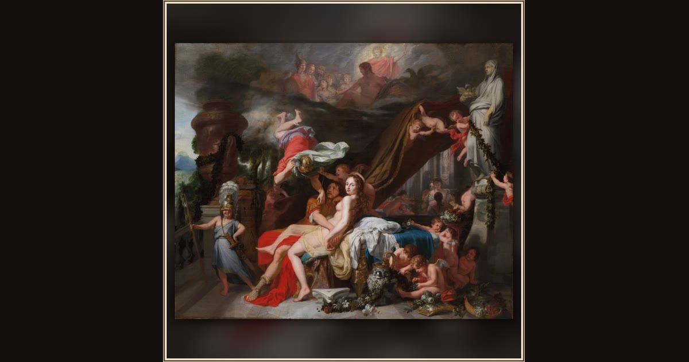

Hermes Ordering Calypso to Release Odysseus
Gerard de Lairesse · c. 1670 · Cleveland Museum of Art · Cleveland, USA
The messenger god Hermes swoops down to tell the nymph Calypso she must finally free Odysseus so he can sail home to his family. Explore its place in Book V of the Odyssey.